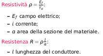

Un sensore di spostamento misura la variazione delle coordinate dell’oggetto da un punto all’altro;
Potenziometro
sensore resistivo che lega la resistenza allo spostamento dell’oggetto a cui è collegato.
Principi fisici : Resistenza e resistività 
La resistenza dipenda dalla lunghezza del conduttore: collegando l'oggetto da misurare al conduttore è possibile determinarne lo spostamento
Dispositivo attivo: richiede passaggio di corrente elettrica
- richiedono fisicamente l’accoppiamento (magnetico o meccanico) tra l’oggetto e la spazzola il cui movimento causa la variazione di resistenza;=> usura spazzola
- comportamento dinamco a basse frequenze
- Bassa stabilità ai fattori ambientali
Senzori capacitivi
legano lo spostamento alla variazione di capacità;
Principi fisici: Capacità nel vuoto e nel mezzo